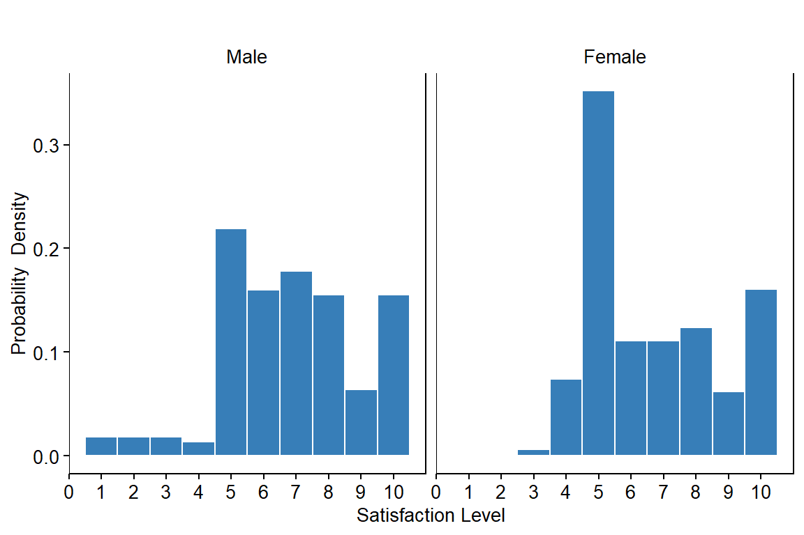

Load Data
dat <- read.delim(file.dat, header = TRUE, stringsAsFactors = FALSE)
# FACTORIZE ---
dat$DISTRICT <- factor(dat$DISTRICT, levels = c("Dhading", "Sindhupalchowk"))
dat$VDC_MUN <- factor(dat$VDC_MUN, levels = c("Gumdi", "Sertung", "Batase", "Pangtang"))
dat$WARD <- as.factor(dat$WARD)
dat$SEX <- factor(dat$SEX, levels = c("Male", "Female"))
dat$ETHNICITY <- factor(dat$ETHNICITY, levels = c("Bahun", "Chhetri", "Dalit-Others",
"Gurung-Magar", "Newar", "Tamang"))
dat$EDUCATION_LEVEL <- factor(dat$EDUCATION_LEVEL, levels = c("Illiterate", "Primary",
"Secondary", "University"))
dat$OCCUPATION <- factor(dat$OCCUPATION, levels = c("Agriculture", "Business", "Goverment Employee",
"Labour", "Teacher"))
dat$INCOME_LEVEL <- factor(dat$INCOME_LEVEL, levels = c("0-2.5K", "2.5-10K", "10-20K",
"20-40K", "40-60K", "60K-Above"))
dat$RECON_COMPLETED <- as.factor(dat$RECON_COMPLETED)
dat$FREEDOM_CHOICE <- as.factor(dat$FREEDOM_CHOICE)
# str(dat)
Generate Basic Statistics
Overall Satisfaction Level
dm <- dat %>%
dplyr::summarize(Satisfaction_Mean=round(mean(SATISFACTION_LEVEL),3),
Satisfaction_Median=round(median(SATISFACTION_LEVEL),3),
Satisfaction_SD=round(sd(SATISFACTION_LEVEL),3))
knitr::kable(dm)
Distribution by Location
df11 <- dat %>%
dplyr::count(DISTRICT, sort=FALSE, name="Number_of_Households")
df12 <- dat %>%
dplyr::select(DISTRICT, SATISFACTION_LEVEL) %>%
group_by(DISTRICT) %>%
summarize(Satisfaction_Mean=round(mean(SATISFACTION_LEVEL),3),
Satisfaction_Median=round(median(SATISFACTION_LEVEL),3),
Satisfaction_SD=round(sd(SATISFACTION_LEVEL),3))
df1 <- merge(df11, df12, by="DISTRICT")
knitr::kable(df1)
| Dhading |
197 |
6.569 |
6 |
2.129 |
| Sindhupalchowk |
184 |
6.973 |
7 |
1.951 |
Distribution by Sex
df21 <- dat %>%
dplyr::count(SEX, sort=FALSE, name="Number_of_Households")
df22 <- dat %>%
dplyr::select(SEX, SATISFACTION_LEVEL) %>%
group_by(SEX) %>%
summarize(Satisfaction_Mean=round(mean(SATISFACTION_LEVEL),3),
Satisfaction_Median=round(median(SATISFACTION_LEVEL),3),
Satisfaction_SD=round(sd(SATISFACTION_LEVEL),3))
df2 <- merge(df21, df22, by="SEX")
knitr::kable(df2)
| Female |
162 |
6.667 |
6 |
2.003 |
| Male |
219 |
6.836 |
7 |
2.090 |
Distribution by Ethnicity
df31 <- dat %>%
dplyr::count(ETHNICITY, sort=FALSE, name="Number_of_Households")
df32 <- dat %>%
dplyr::select(ETHNICITY, SATISFACTION_LEVEL) %>%
group_by(ETHNICITY) %>%
summarize(Satisfaction_Mean=round(mean(SATISFACTION_LEVEL),3),
Satisfaction_Median=round(median(SATISFACTION_LEVEL),3),
Satisfaction_SD=round(sd(SATISFACTION_LEVEL),3))
df3 <- merge(df31, df32, by="ETHNICITY")
knitr::kable(df3)
| Bahun |
40 |
7.725 |
8 |
1.783 |
| Chhetri |
52 |
7.250 |
7 |
1.969 |
| Dalit-Others |
47 |
6.830 |
6 |
2.099 |
| Gurung-Magar |
81 |
6.741 |
7 |
2.011 |
| Newar |
36 |
7.167 |
7 |
1.828 |
| Tamang |
125 |
6.128 |
6 |
2.067 |
Distribution by Income Level
df41 <- dat %>%
dplyr::count(INCOME_LEVEL, sort=FALSE, name="Number_of_Households")
df42 <- dat %>%
dplyr::select(INCOME_LEVEL, SATISFACTION_LEVEL) %>%
group_by(INCOME_LEVEL) %>%
summarize(Satisfaction_Mean=round(mean(SATISFACTION_LEVEL),3),
Satisfaction_Median=round(median(SATISFACTION_LEVEL),3),
Satisfaction_SD=round(sd(SATISFACTION_LEVEL),3))
df4 <- merge(df41, df42, by="INCOME_LEVEL")
knitr::kable(df4)
| 0-2.5K |
31 |
7.355 |
8 |
1.976 |
| 10-20K |
120 |
6.892 |
7 |
2.233 |
| 2.5-10K |
148 |
6.527 |
6 |
2.065 |
| 20-40K |
70 |
6.829 |
7 |
1.668 |
| 40-60K |
8 |
6.750 |
7 |
1.488 |
| 60K-Above |
4 |
6.000 |
6 |
3.266 |
Distribution by Education Level
df51 <- dat %>%
dplyr::count(EDUCATION_LEVEL, sort=FALSE, name="Number_of_Households")
df52 <- dat %>%
dplyr::select(EDUCATION_LEVEL, SATISFACTION_LEVEL) %>%
group_by(EDUCATION_LEVEL) %>%
summarize(Satisfaction_Mean=round(mean(SATISFACTION_LEVEL),3),
Satisfaction_Median=round(median(SATISFACTION_LEVEL),3),
Satisfaction_SD=round(sd(SATISFACTION_LEVEL),3))
df5 <- merge(df51, df52, by="EDUCATION_LEVEL")
knitr::kable(df5)
| Illiterate |
178 |
6.539 |
6 |
2.072 |
| Primary |
80 |
7.000 |
7 |
1.889 |
| Secondary |
117 |
6.949 |
7 |
2.133 |
| University |
6 |
6.667 |
7 |
1.633 |
Distribution by Reconstruction Completed Level
df61 <- dat %>%
dplyr::count(RECON_COMPLETED, sort=FALSE, name="Number_of_Households")
df62 <- dat %>%
dplyr::select(RECON_COMPLETED, SATISFACTION_LEVEL) %>%
group_by(RECON_COMPLETED) %>%
summarize(Satisfaction_Mean=round(mean(SATISFACTION_LEVEL),3),
Satisfaction_Median=round(median(SATISFACTION_LEVEL),3),
Satisfaction_SD=round(sd(SATISFACTION_LEVEL),3))
df6 <- merge(df61, df62, by="RECON_COMPLETED")
knitr::kable(df6)
| 100 |
292 |
6.818 |
7.0 |
2.089 |
| 20 |
24 |
6.208 |
5.5 |
2.146 |
| 40 |
14 |
6.429 |
6.5 |
2.102 |
| 60 |
7 |
6.000 |
6.0 |
1.000 |
| 80 |
44 |
6.932 |
7.0 |
1.848 |
Distribution by Freedom of Choice
df71 <- dat %>%
dplyr::count(RECON_COMPLETED, sort=FALSE, name="Number_of_Households")
df72 <- dat %>%
dplyr::select(RECON_COMPLETED, SATISFACTION_LEVEL) %>%
group_by(RECON_COMPLETED) %>%
summarize(Satisfaction_Mean=round(mean(SATISFACTION_LEVEL),3),
Satisfaction_Median=round(median(SATISFACTION_LEVEL),3),
Satisfaction_SD=round(sd(SATISFACTION_LEVEL),3))
df7 <- merge(df71, df72, by="RECON_COMPLETED")
knitr::kable(df7)
| 100 |
292 |
6.818 |
7.0 |
2.089 |
| 20 |
24 |
6.208 |
5.5 |
2.146 |
| 40 |
14 |
6.429 |
6.5 |
2.102 |
| 60 |
7 |
6.000 |
6.0 |
1.000 |
| 80 |
44 |
6.932 |
7.0 |
1.848 |
|
|
|
|
|
Distribution of Satisfaction Level
p1 <- ggplot(dat, aes(x=SATISFACTION_LEVEL)) +
geom_histogram(aes(y=..density..), position="identity", color="#FFFFFF", fill="#377eb8", bins=10) +
scale_x_continuous(breaks=seq(0,10,by=1)) +
theme(
axis.text.x = element_text(size = 10, color="#000000"),
axis.text.y = element_text(size = 10, color="#000000"),
axis.title.x = element_text(size = 10, color="#000000"),
axis.title.y = element_text(size = 10, color="#000000"),
plot.title = element_text(size = 10, color="#000000", hjust=0.5),
panel.grid.major = element_blank(),
panel.grid.minor = element_blank(),
axis.ticks = element_line(size=0.4, color="#000000"),
strip.text = element_text(size=10, color="#000000"),
strip.background = element_rect(fill="#FFFFFF", color="#FFFFFF"),
panel.background = element_rect(fill="#FFFFFF", color="#000000"),
legend.text = element_text(size = 10, color="#000000"),
legend.title = element_blank(),
legend.key.size = unit(0.5, "cm"),
legend.position = "none") +
ylab("Probability Density") +
xlab("Satisfaction Level") +
ggtitle("")
p1

Distribution of Satisfaction Level (by Ethnicity)
p2 <- ggplot(dat, aes(x=SATISFACTION_LEVEL)) +
geom_histogram(aes(y=..density..), position="identity", color="#FFFFFF", fill="#377eb8", bins=10) +
scale_x_continuous(breaks=seq(0,10,by=1)) +
facet_wrap(~ETHNICITY, nrow=2, scales="fixed") +
theme(
axis.text.x = element_text(size = 10, color="#000000"),
axis.text.y = element_text(size = 10, color="#000000"),
axis.title.x = element_text(size = 10, color="#000000"),
axis.title.y = element_text(size = 10, color="#000000"),
plot.title = element_text(size = 10, color="#000000", hjust=0.5),
panel.grid.major = element_blank(),
panel.grid.minor = element_blank(),
axis.ticks = element_line(size=0.4, color="#000000"),
strip.text = element_text(size=10, color="#000000", hjust=0.5),
strip.background = element_rect(fill="#FFFFFF", color="#FFFFFF"),
panel.background = element_rect(fill="#FFFFFF", color="#000000"),
legend.text = element_text(size = 10, color="#000000"),
legend.title = element_blank(),
legend.key.size = unit(0.5, "cm"),
legend.position = "none") +
ylab("Probability Density") +
xlab("Satisfaction Level") +
ggtitle("")
p2
Distribution of Satisfaction Level (by Sex)
p3 <- ggplot(dat, aes(x=SATISFACTION_LEVEL)) +
geom_histogram(aes(y=..density..), position="identity", color="#FFFFFF", fill="#377eb8", bins=10) +
scale_x_continuous(breaks=seq(0,10,by=1)) +
facet_wrap(~SEX, nrow=1, scales="fixed") +
theme(
axis.text.x = element_text(size = 10, color="#000000"),
axis.text.y = element_text(size = 10, color="#000000"),
axis.title.x = element_text(size = 10, color="#000000"),
axis.title.y = element_text(size = 10, color="#000000"),
plot.title = element_text(size = 10, color="#000000", hjust=0.5),
panel.grid.major = element_blank(),
panel.grid.minor = element_blank(),
axis.ticks = element_line(size=0.4, color="#000000"),
strip.text = element_text(size=10, color="#000000", hjust=0.5),
strip.background = element_rect(fill="#FFFFFF", color="#FFFFFF"),
panel.background = element_rect(fill="#FFFFFF", color="#000000"),
legend.text = element_text(size = 10, color="#000000"),
legend.title = element_blank(),
legend.key.size = unit(0.5, "cm"),
legend.position = "none") +
ylab("Probability Density") +
xlab("Satisfaction Level") +
ggtitle("")
p3

Distribution of Satisfaction Level (by Ethnicity and Sex)
p4 <- ggplot(dat, aes(x=SATISFACTION_LEVEL)) +
geom_histogram(aes(y=..density..), position="identity", color="#FFFFFF", fill="#377eb8", bins=10) +
scale_x_continuous(breaks=seq(0,10,by=1)) +
facet_grid(SEX~ETHNICITY, scales="fixed") +
theme(
axis.text.x = element_text(size = 10, color="#000000"),
axis.text.y = element_text(size = 10, color="#000000"),
axis.title.x = element_text(size = 10, color="#000000"),
axis.title.y = element_text(size = 10, color="#000000"),
plot.title = element_text(size = 10, color="#000000", hjust=0.5),
panel.grid.major = element_blank(),
panel.grid.minor = element_blank(),
axis.ticks = element_line(size=0.4, color="#000000"),
strip.text = element_text(size=10, color="#000000", hjust=0.5),
strip.background = element_rect(fill="#FFFFFF", color="#FFFFFF"),
panel.background = element_rect(fill="#FFFFFF", color="#000000"),
legend.text = element_text(size = 10, color="#000000"),
legend.title = element_blank(),
legend.key.size = unit(0.5, "cm"),
legend.position = "none") +
ylab("Probability Density") +
xlab("Satisfaction Level") +
ggtitle("")
p4